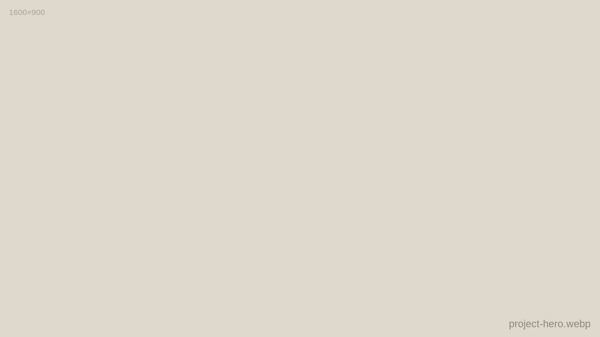
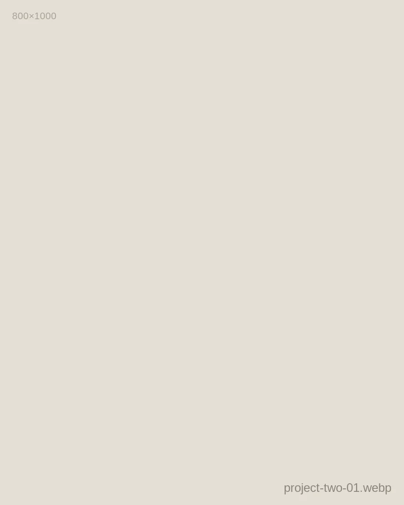
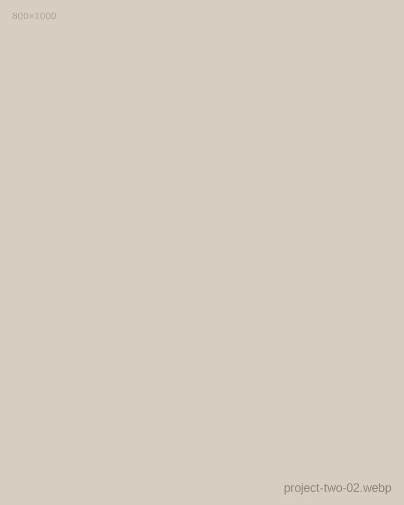
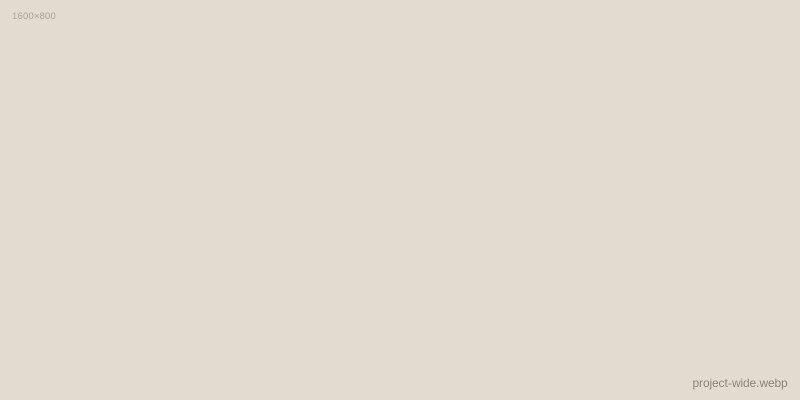
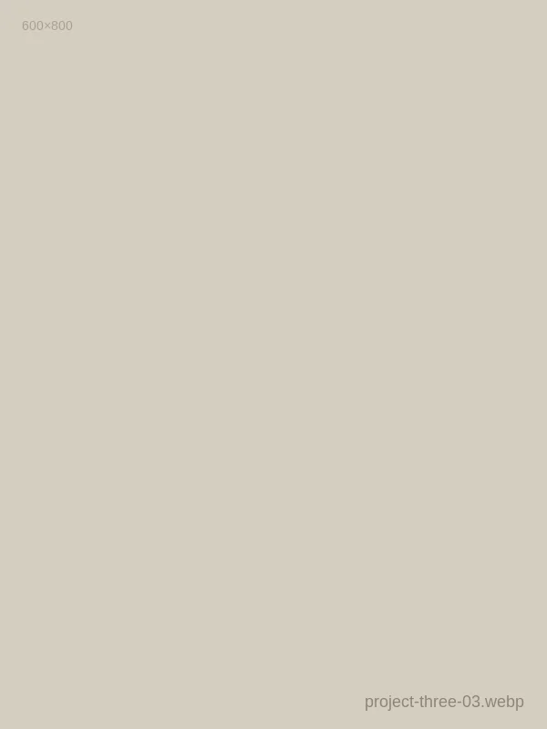
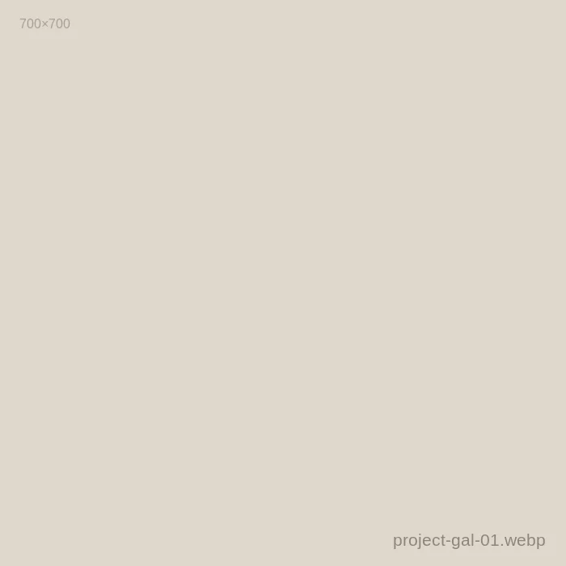
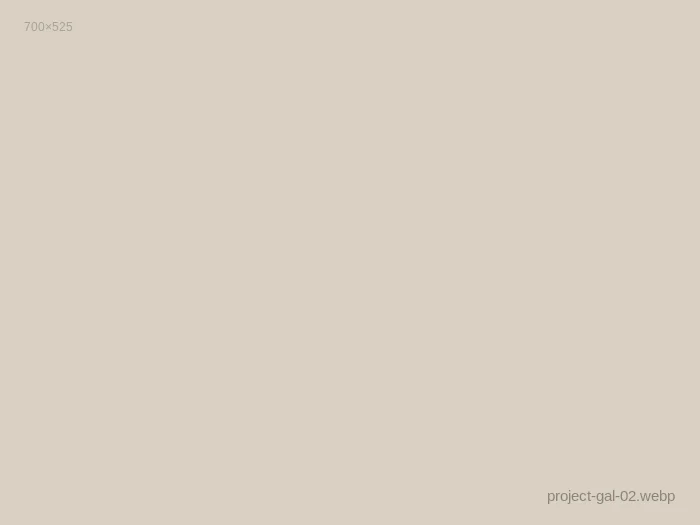
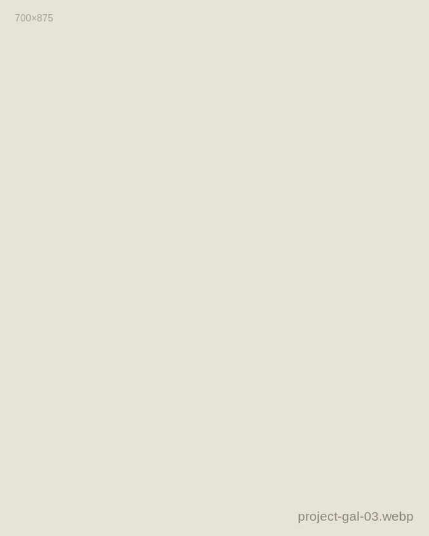
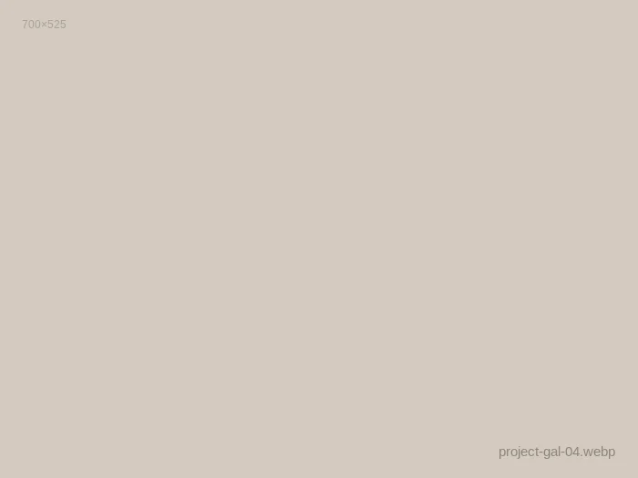
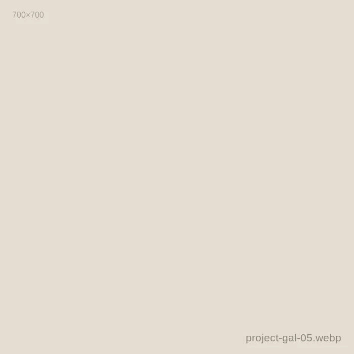

[Kinfolk Volume XIV: The Art of Stillness]
[Kinfolk Magazine]
[2026]
[Lead Photographer]
[Editorial & Art Direction]
[Commissioned over a four-day residency on the island of Gotland, this series explores how domestic silence reflects architectural minimalism. Working strictly with morning autumn fog and unfiltered northern daylight, our objective was to capture ceramic forms as solitary figures within vast negative space.]

[Plate 01: Morning raking light over polished Gotland limestone.]

[Plate 02: Tactile study in raw earth and unglazed clay.]

[Plate 03: Negative space framing the studio pine forest.]
"[Light does not need to shout. When you allow shadows to breathe, the object assumes its own sacred gravity.]"
— Notes from the Gotland field diary

[Plate 04: Panoramic workshop spread across Gotland limestone floor.]
[Plate 05: Glaze crystallization detail.]
[Plate 06: Trimming leather-hard clay base.]

[Plate 07: Kiln opening color gradation.]
Archival Contact Sheet (6 Plates)
Gotland Series Archive



